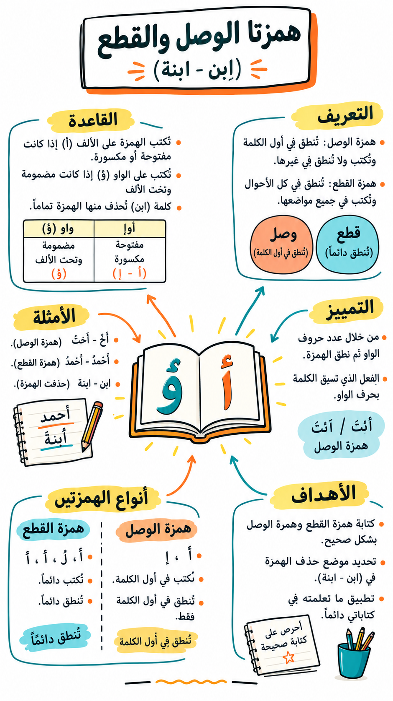
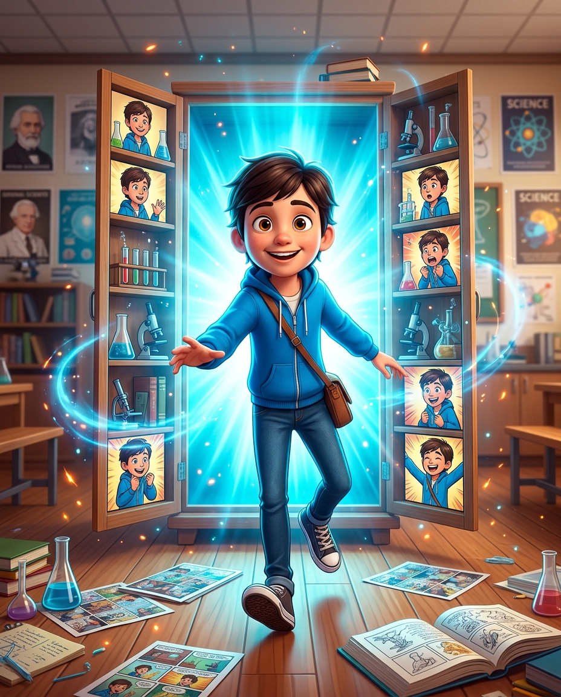
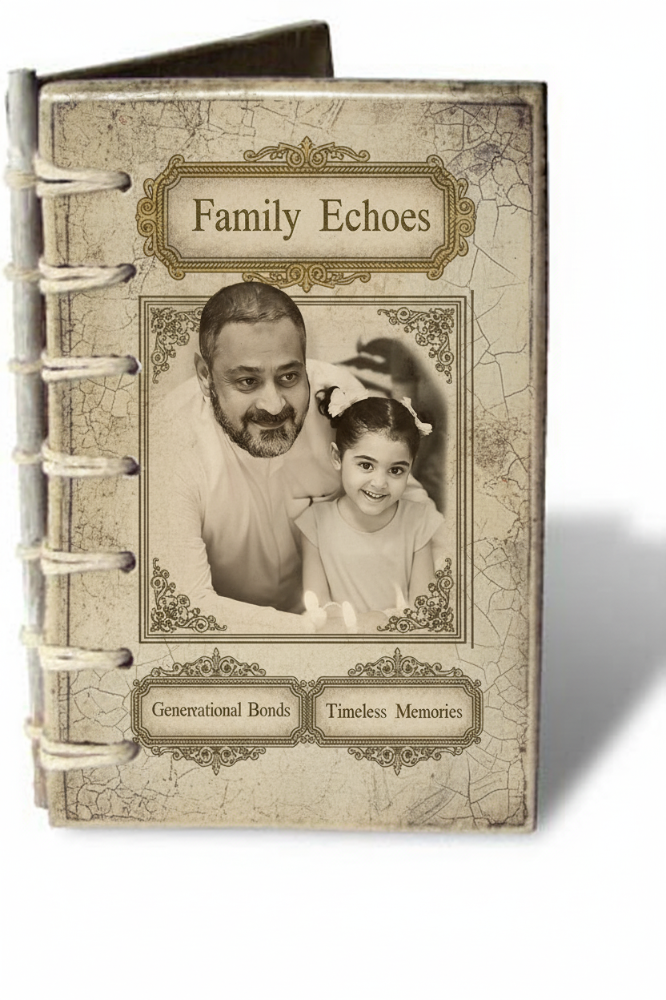
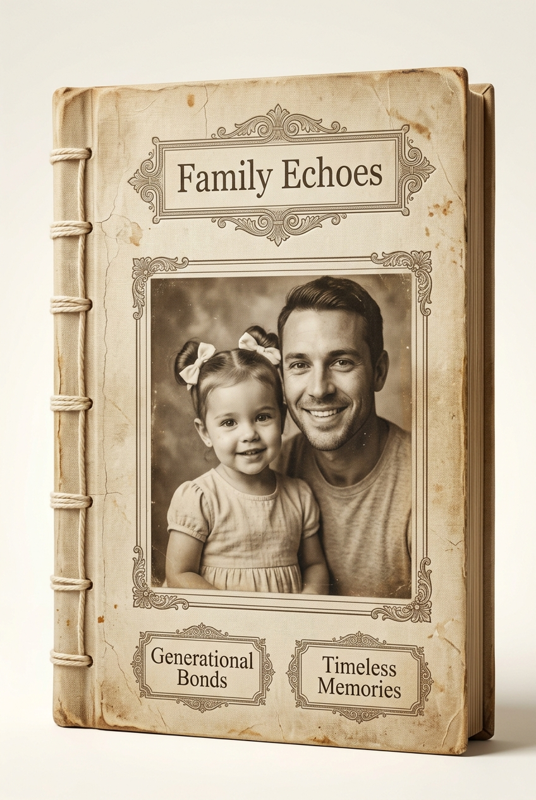

Prompt engineering
Prompt engineering is the art of precisely crafting text inputs to elicit the best possible response from the robot.
A generative AI tool does not read your mind. It reads your sentence. Two teachers can ask for the same lesson and receive completely different results, and the difference is almost never the tool — it is how the request was written. Prompt engineering is simply the habit of writing a request that carries enough information to be carried out.
The best-known AI chatbots
ChatGPT
A conversational AI assistant from OpenAI. It answers questions, explains concepts, writes and summarises, translates, analyses files and images, and helps with planning and problem-solving. In this session you use it to test prompts and watch how clarity, context and structure change the answer.
https://chatgpt.com
Open ChatGPTGoogle Gemini
Google's generative AI assistant. It generates ideas, explains topics, prepares written drafts, summarises, plans tasks, and works with text, images and uploaded files. Use it to run the same prompt in a different system and compare the quality, style and structure of the two answers.
https://gemini.google.com
Open GeminiClaude
Claude is an AI assistant developed by Anthropic that can write, analyze, code, answer questions, and assist with various tasks through natural conversation. It is designed to be helpful, honest, and safe in its interactions with people.
https://claude.ai
Open ClaudeThe RCTF frame in one page
Four letters, four questions. Answer them in order and the request writes itself.
Who should the AI be?
Why, for whom, and under what conditions?
What exactly must it do?
What shape should the answer take?
| RCTF | English | العربية |
|---|---|---|
| R | Role — Assigned roles or personas, such as giving the AI a specific persona: "act as an educational expert" or "act as a technical expert". | الدور — الأدوار الاعتبارية أو الشخصية، كإعطاء الذكاء الاصطناعي شخصية اعتبارية، مثلًا: "أجب كخبير تربوي" أو "أجب كخبير تقني". |
| C | Context — The information surrounding the task, which clarifies the "why" and the "how". | السياق — المعلومات المحيطة بالمهمة، التي توضّح: لماذا؟ وكيف؟ |
| T | Task — The specific task required of the AI: exactly what needs to be done. | المهمة — المهمة المحددة المطلوبة من الذكاء الاصطناعي: ما يجب القيام به بالضبط. |
| F | Format — The shape of the output or desired result, such as an image, a table or an article. | التنسيق — شكل المخرجات أو النتيجة المطلوبة، كصورة أو جدول أو مقال... إلخ. |
Why each letter earns its place
- Role sets the expertise and the register. "An experienced Grade 5 science teacher" produces different vocabulary from "a university lecturer".
- Context is the part teachers forget. Class size, lesson length, ability range, language support, available equipment — these are the constraints that make an answer usable in your room rather than in an ideal one.
- Task must contain a verb you can assess: explain, sequence, classify, compare, justify. "Make something about the water cycle" is not a task.
- Format decides whether you can use the answer immediately. A table with named columns can be printed; six paragraphs of prose have to be rewritten first.
A strong prompt, a strong result, exactly as you want it
The same request, asked for twice: once weak, once with RCTF. Copy each one into ChatGPT and compare what comes back.
The weak prompt
The strong RCTF prompt
The weak prompt
The strong RCTF prompt
What changed, line by line
- Role: from nobody in particular to a senior B2B copywriter, so the tone and vocabulary are professional.
- Context: the product and the audience are named — a time-saving tool for busy small business owners.
- Task: “an email” becomes one specific message with one measurable promise: five hours saved a week.
- Format: length, subject line and call-to-action are fixed, so the answer is ready to use without rewriting.
Practical example: a lesson summary infographic
A complete RCTF prompt that turns a lesson into a hand-drawn whiteboard-style infographic.
- Choose the prompt language, then fill in the teacher details highlighted in green at the top.
- Click “Copy the prompt”, then paste it into ChatGPT; attach the lesson file if you have one.
- Check the text plan that comes after the image against your lesson before you use it in class.

The same frame, applied to a picture
RCTF does not change when the output is an image. Only the four answers change.
| RCTF | For a picture, this means | في حالة الصورة |
|---|---|---|
| R | Role — the artist you are hiring: 3D scene designer, character artist, children's-book illustrator. | الدور — الفنان الذي توظفه: مصمم مشاهد ثلاثية الأبعاد، أو فنان شخصيات، أو رسام كتب أطفال. |
| C | Context — the world of the picture: the place, the objects in it, who the character is and what they are wearing. | السياق — عالم الصورة: المكان، والأشياء الموجودة فيه، ومن هي الشخصية وماذا ترتدي. |
| T | Task — the exact moment to draw, the pose, the lighting, and everything that must not appear. | المهمة — اللحظة المطلوب رسمها بدقة، والوضعية، والإضاءة، وكل ما يجب ألا يظهر. |
| F | Format — orientation, aspect ratio, camera angle, depth of field, style and resolution. | التنسيق — الاتجاه، ونسبة الأبعاد، وزاوية الكاميرا، وعمق المجال، والأسلوب، والدقة. |
Two habits that separate a usable image prompt from a wish: name what must not appear (text, logos, extra fingers, cropped feet), and describe the same character with the same words every time you mention them. Consistency in your wording is what produces consistency in the picture.
Below is one complete RCTF image prompt, followed by the picture it actually produced. Read the prompt first, then look at the picture and find each instruction in it.

Now check the result against the prompt
- Review every point you asked for in the prompt: was each one carried out?
- Never publish an AI picture to learners without checking it for anatomy, stray writing and anything culturally inappropriate.
Reverse-engineer a prompt
Get the prompt behind any image you like.
Writing a picture prompt from an empty page is hard. Reading one out of a finished picture is much easier — and it is the fastest way to learn what a good image prompt contains. Upload any picture you like, ask for its prompt in the RCTF frame, and you receive a written model you can adapt to your needs.
- Upload the picture into ChatGPT or Gemini with the plus button.
- Copy the reverse request below and send it with the picture.
- Paste the prompt it returns into a new chat, without the picture, to rebuild the image.
The worked example — memory album cover


1 · The reverse request (send it with the picture)
2 · The prompt it returned for this picture